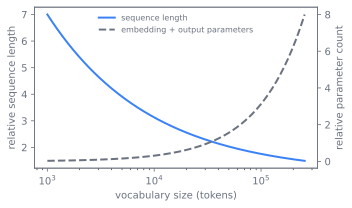
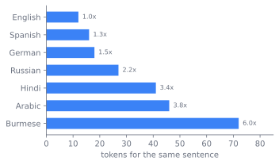

5 Tokenization
A tokenizer is the map between text and the integer ids a model actually reads. By the end of this chapter a reader can explain why almost every frontier model uses byte-level BPE, what unigram and tokenizer-free schemes trade against it, and why this one early choice quietly caps downstream quality and is among the hardest decisions in the stack to revisit.
5.1 A model never sees text
A transformer does not see text. It sees a sequence of integers drawn from a fixed vocabulary, each mapped to a row of an embedding matrix. Something has to turn a stream of Unicode into that sequence, and the tokenizer is that something. The choice looks like plumbing and behaves like a foundation.
What makes it a foundation rather than plumbing is the conjunction of three constraints, each harmless alone and unforgiving together.
The vocabulary must be finite and fixed before training begins, yet text is open. New words, code, emoji, and languages the designer never enumerated must still encode without failure. A table of words can never be complete, so completeness has to come from somewhere other than the table.
The segmentation must be cheap. Tokenization runs over the entire corpus on CPU fleets ahead of the GPU run, as covered in sec-data-curation, so an elegant but slow scheme is not affordable at corpus scale.
And the result is permanent. The embedding and output matrices are sized to the vocabulary, so the vocabulary cannot change without retraining the model. A tokenizer trained on a skewed corpus caps quality for everything under-represented in it, and that ceiling is invisible until evaluation.
These three pull together into the chapter’s thesis: the tokenizer choice bounds downstream quality and is close to irreversible. Everything that follows is an attempt to satisfy the first two constraints while living honestly with the third.
5.2 The subword bargain
The dominant answer is subword tokenization: a vocabulary of pieces smaller than words but larger than characters, sized so common words are single tokens while rare words decompose into known parts. This is a bargain struck directly against the open-vocabulary constraint. Any string is representable because the pieces bottom out at units that always exist, and frequent text stays short because common sequences are merged into single ids.
Byte-pair encoding (BPE) is the workhorse construction. Start from a base alphabet, count adjacent pair frequencies across the corpus, merge the most frequent pair into a new symbol, and repeat until the vocabulary reaches its target size (Sennrich et al. 2015). The learned merge list is the tokenizer; encoding replays the merges in order.
# BPE training, conceptual
vocab = set(base_symbols)
merges = []
while len(vocab) < target_size:
pair = most_frequent_adjacent_pair(corpus, vocab)
merges.append(pair)
vocab.add(merge(pair))A worked example makes the loop concrete. Figure fig-tokenization-bpe-merge runs three merges on a tiny corpus of the word low repeated, where the most frequent adjacent pair is absorbed into a new symbol each round until the common sequence is a single token.
The decisive refinement is to run BPE over raw bytes rather than Unicode characters. With 256 byte values as the base alphabet, every possible input encodes with zero out-of-vocabulary risk, even text the tokenizer never saw, and there is no separate unknown token to handle. This is byte-level BPE, and it is why the same tokenizer can ingest English, code, a new emoji, and a script absent from its training data. Byte-fallback gives a near-equivalent guarantee in character-based schemes by decomposing any unseen character into its underlying bytes. The open-vocabulary constraint, which sank every word-level table, is now satisfied by construction rather than by hoping the table was large enough.
There is a second question the bargain leaves open: not what the pieces are, but how to choose a split when several are possible. BPE is greedy and frequency-driven, with no probabilistic model of how a string should split. The unigram language model offers an alternative: posit that a sentence is a bag of subword pieces with independent probabilities, start from a large candidate vocabulary, and prune pieces whose removal least hurts the corpus likelihood (Kudo 2018). Unigram yields a principled segmentation and, because it defines a distribution over segmentations, supports subword regularization: sampling alternative splits at training time as a form of augmentation (Kudo 2018).
Two parameters set by the data pipeline govern the rest. Vocabulary size trades sequence length against matrix size, and the tokenizer’s own training corpus bakes in which languages and domains get short, efficient encodings. Both are frozen here and consumed, not chosen, downstream.
5.3 From words to bytes
The construction above did not arrive whole. Tokenization moved from words to bytes in three steps, each removing a failure of the last. Figure fig-tokenization-evolution traces the lineage, with the specific failure each stage carries and the one its successor removes.
Word-level vocabularies came first and broke on the open-vocabulary problem: any word absent from the table became a single unknown token, discarding its content. Character-level models removed the unknown token but made sequences long and forced the model to relearn spelling from scratch, spending depth on what a vocabulary could have stored.
Sennrich et al. (2015) brought BPE, invented for data compression, to neural machine translation as the subword compromise, and it became the default (Sennrich et al. 2015). Kudo (2018) introduced the unigram language model as a probabilistic alternative with subword regularization (Kudo 2018). Kudo and Richardson (2018) packaged both in SentencePiece, which treats input as a raw stream including whitespace, so the tokenizer is language-independent and needs no pre-tokenization rules (Kudo and Richardson 2018). The final step was byte-level BPE, which made the base alphabet the 256 byte values and closed the out-of-vocabulary gap entirely. Byte-level BPE is the construction behind most current frontier tokenizers, with unigram and SentencePiece remaining common in multilingual and non-Latin-script settings.
The open frontier is whether to tokenize at all. Tokenizer-free schemes operate directly on bytes or characters, learning the segmentation inside the model rather than fixing it in a preprocessing step. They remove the frozen vocabulary and its biases, at the cost of longer sequences and the compute to process them. This is a live research direction, not a settled replacement.
ImportantWhat’s contested
Whether a fixed tokenizer should exist at all is genuinely unsettled. The case against it is that the vocabulary is a frozen, corpus-dependent artifact that bakes in language and domain bias, fragments numbers and code in ways that hurt arithmetic and program synthesis, and is the single component you cannot change after training. Tokenizer-free and byte-level approaches answer by learning structure inside the model, trading preprocessing bias for longer sequences and higher compute per character. Byte-level BPE is so entrenched, and the sequence-length penalty of pure byte models so real, that the field has not converged. Treat tokenizer-free schemes as a promising open direction, not a drop-in replacement.
5.4 What you cannot take back
The history above reads like progress, and it is, but every choice it settled became a setting that someone has to make once and then live with. Each tokenizer setting is a balance with a knee, and several of them set a ceiling that only shows up later. Figure fig-05-tokenization-1 makes the central one visible: a larger vocabulary shortens sequences but enlarges the matrices sized to it, so the two costs cross rather than agree.

- Vocabulary size. A larger vocabulary shortens sequences, which makes training and inference cheaper per document and improves multilingual fertility, the number of characters carried per token. It also enlarges the embedding and output matrices and can starve rare tokens of the occurrences they need to train a good embedding. The optimum is a function of corpus and budget, not a constant.
- Training corpus for the tokenizer. Train it on the final data mixture or on a separate curated set? The choice permanently bakes the language and domain balance into the vocabulary. A mismatch with the real mixture spends vocabulary on the wrong things and leaves under-represented languages with long, expensive encodings.
- BPE versus unigram. BPE is greedy, fast, and ubiquitous, with strong tooling and broad compatibility. Unigram is probabilistic, supports subword regularization, and often segments multilingual text more evenly, at the cost of a heavier training procedure and less ecosystem inertia behind it.
- Multilingual fairness. Petrov et al. (2023) show that a tokenizer tuned on English-heavy data splits other languages into many more tokens for the same meaning (Petrov et al. 2023). That inflates cost and latency for those users and shortens their effective context window, a structural unfairness fixed in the vocabulary itself. This is the trade-off that most directly caps downstream quality, and it is set entirely here. Figure fig-05-tokenization-2 shows the shape of the gap: the same sentence costs several times more tokens in some languages than in English.

The reason these matter more than ordinary hyperparameters is lock-in. A vocabulary trained on a skewed mixture caps multilingual quality and inflates token cost for under-served languages, and it cannot be changed without retraining the model, because the embedding and output matrices are sized to it. Vocabulary extension during continued training can graft on new tokens as a partial workaround, but it does not undo the original bias. The honest summary is that the tokenizer is decided once and lived with for the model’s life, which is why a choice that looks like preprocessing deserves the scrutiny of an architecture decision.
TipConstraint arrow
The tokenizer is frozen in the data pipeline and dictates a choice one layer up. The vocabulary size set here fixes the row count of the embedding matrix and the output projection in sec-transformer-architecture: that layer consumes the vocabulary and sizes its matrices to match, it does not get to choose it. A token budget decided during data work therefore sets a hard parameter of the model architecture.
5.5 Knobs you set once
Naming the lock-in is not the same as dismissing the work. In practice a tokenizer is trained once, with a handful of decisions that are expensive to get wrong, and two recurring knobs deserve their own attention beyond vocabulary size and training corpus.
The first is digit handling: splitting numbers into individual digits so arithmetic does not depend on whether “1234” happened to merge into one token. The second is whitespace handling, where SentencePiece-style schemes encode spaces as ordinary symbols so detokenization is exact and reversible (Kudo and Richardson 2018). The build itself is the BPE training, conceptual loop above: count, merge, repeat, then freeze the merge list and vocabulary as the artifact every later stage consumes.
That artifact is the whole point. It is small, it is produced early, and it binds everything downstream to the language and domain balance present in the corpus that made it. A choice that looks like preprocessing turns out to be the first irreversible commitment in the model’s life, and that is the lens worth carrying into the architecture that consumes it.
5.6 Further reading
- Sennrich et al., “Neural Machine Translation of Rare Words with Subword Units” (BPE), 2015. arXiv:1508.07909
- Kudo, “Subword Regularization: Improving Neural Network Translation Models with Multiple Subword Candidates” (Unigram LM), 2018 (ACL). ACL Anthology
- Kudo & Richardson, “SentencePiece: A simple and language independent subword tokenizer and detokenizer,” 2018 (EMNLP, system demo). ACL Anthology
- Petrov et al., “Language Model Tokenizers Introduce Unfairness Between Languages,” 2023 (NeurIPS). NeurIPS Proceedings
Kudo, Taku. 2018. “Subword Regularization: Improving Neural Network Translation Models with Multiple Subword Candidates.” Proceedings of the 56th Annual Meeting of the Association for Computational Linguistics (ACL). https://aclanthology.org/P18-1007/.
Kudo, Taku, and John Richardson. 2018. “SentencePiece: A Simple and Language Independent Subword Tokenizer and Detokenizer for Neural Text Processing.” Proceedings of the 2018 Conference on Empirical Methods in Natural Language Processing (EMNLP): System Demonstrations. https://aclanthology.org/D18-2012/.
Petrov, Aleksandar, Emanuele La Malfa, Philip H. S. Torr, and Adel Bibi. 2023. “Language Model Tokenizers Introduce Unfairness Between Languages.” Advances in Neural Information Processing Systems (NeurIPS). https://proceedings.neurips.cc/paper_files/paper/2023/hash/74bb24dca8334adce292883b4b651eda-Abstract-Conference.html.
Sennrich, Rico, Barry Haddow, and Alexandra Birch. 2015. “Neural Machine Translation of Rare Words with Subword Units.” arXiv Preprint arXiv:1508.07909. https://arxiv.org/abs/1508.07909.